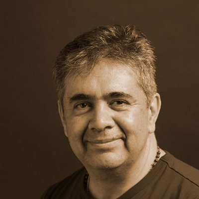

Jorge Aranda
Founder and CEO of NeuroAnalítica.
Postgraduate in Interactive Media Management
Postgraduate Brand Management
Bahcelor degree Graphic Design
| 
|
Jorge ArandaFounder and CEO of NeuroAnalítica. Postgraduate in Interactive Media Management Postgraduate Brand Management Bahcelor degree Graphic Design |
My name is Jorge Aranda, a Graphic Design graduate from the Iberoamericana University in Mexico City, one of the pioneering universities having this program. As I saw the future of the Internet, I decided to pursue a Diploma in Web Design also at my alma mater, which has helped in my development as a more complete professional. Recently I received two postgraduate certificates from Algonquin College one in Interactive Media Management and another for Brand Management. I have advanced knowledge of photography, along with my own equipment which I use for my regular jobs, and as a support service. I am always willing to learn new software and technologies, as I have adapted to continual changes in the industry. I possess a strong knowledge of digital marketing, community management and strategies to develop corporate communication, along with tools such as Google Adwords, Analytics, and SEO. You can also download my portfolio, resume and CV here.
More about me: Aranda StudioEditorial design process
The first stage, a new version of the logo “KAS Paper”. There was a requirement, preserving the original colours of the organization. Therefore, they choose the new version that portrays a modern strong and subtle tone that enhances the look of the new logo series.
| Web development | ⭐⭐⭐⭐ |
| Photoshop | ⭐⭐⭐⭐ |
| Branding | ⭐⭐⭐⭐ |
| Strategy | ⭐⭐⭐⭐ |